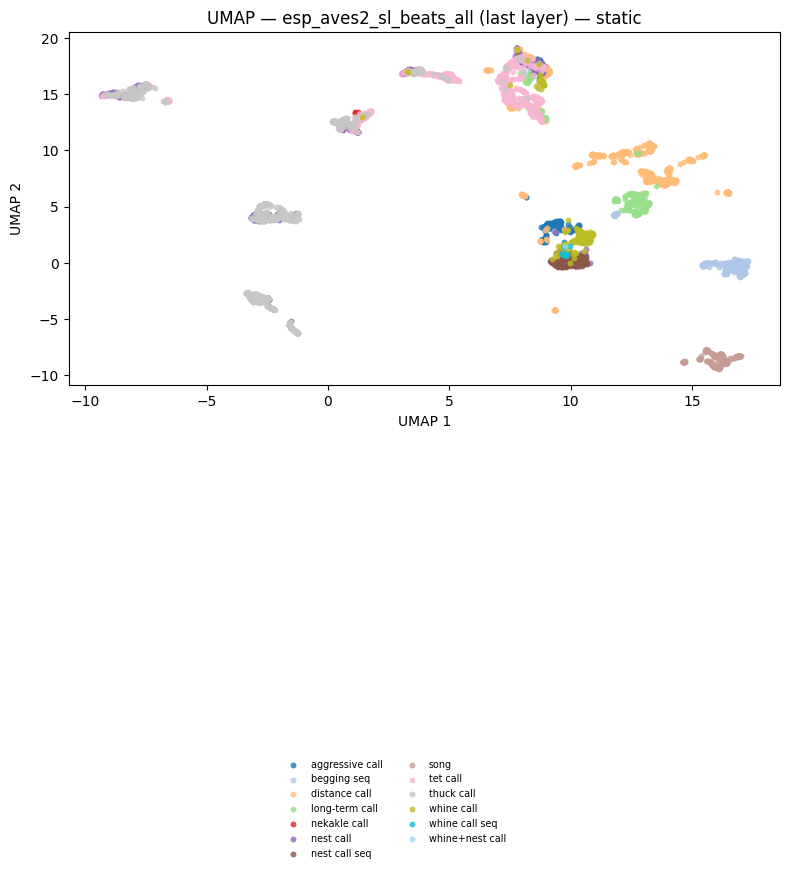
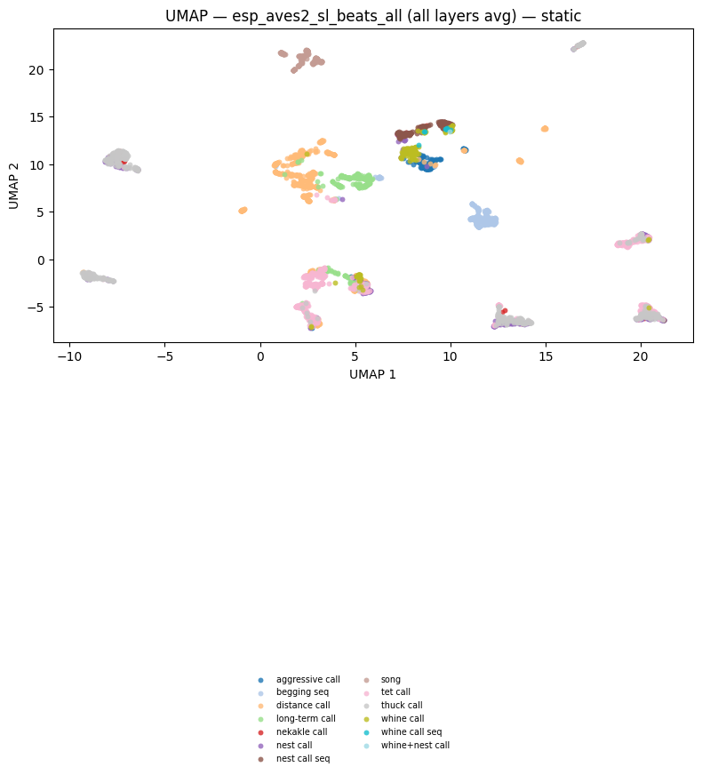
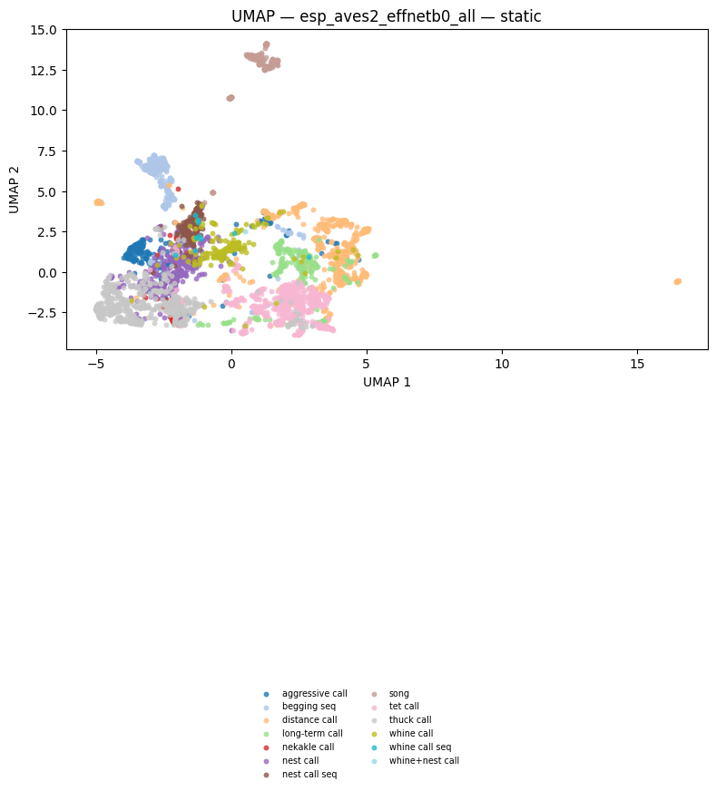
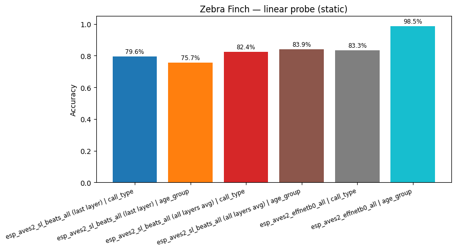
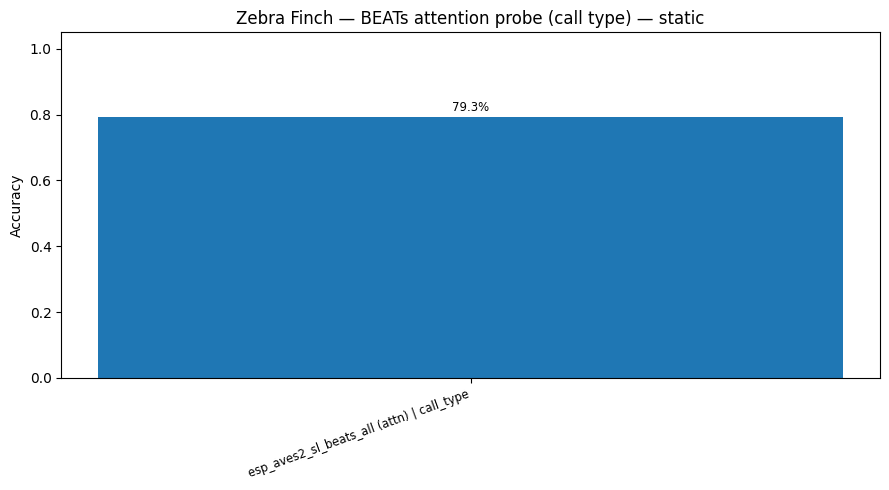
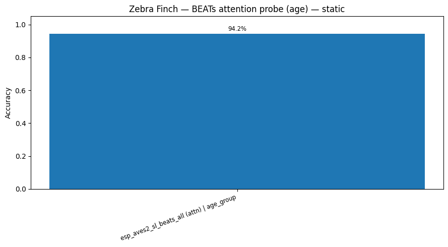
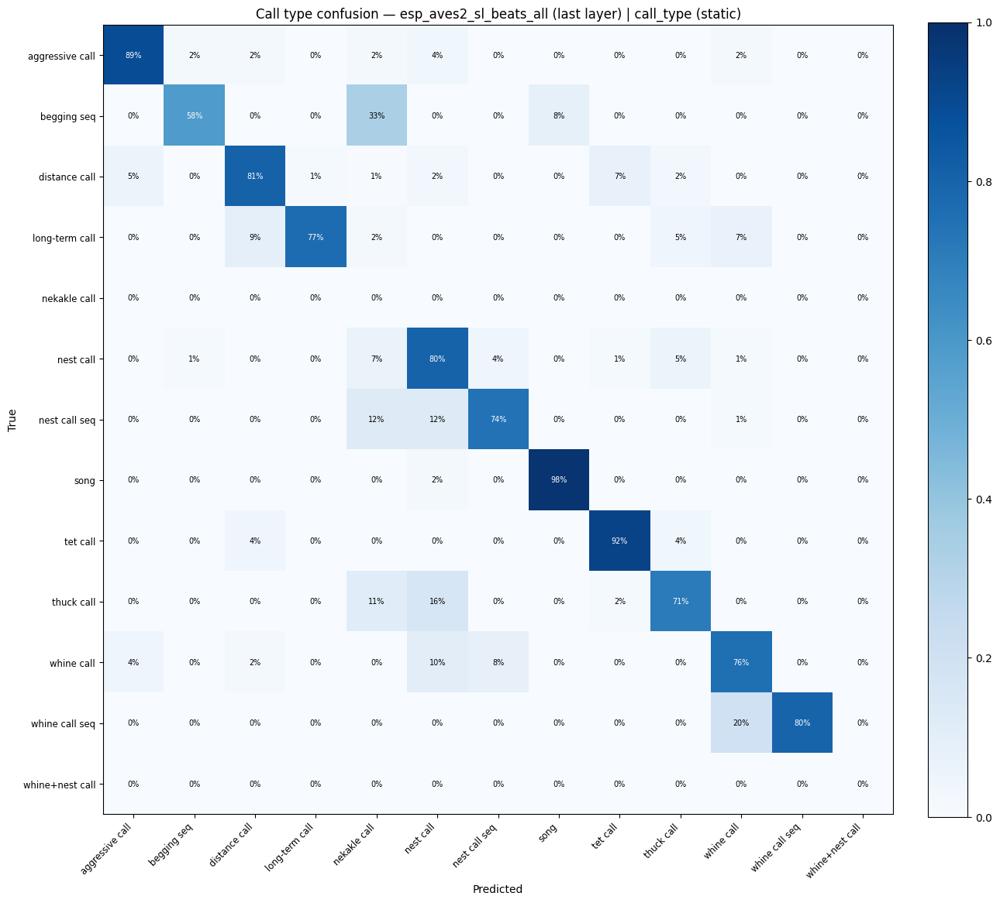
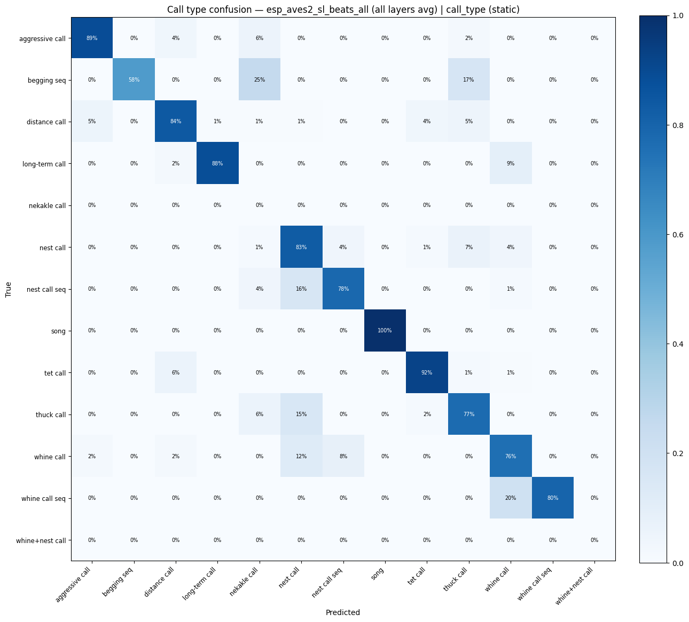
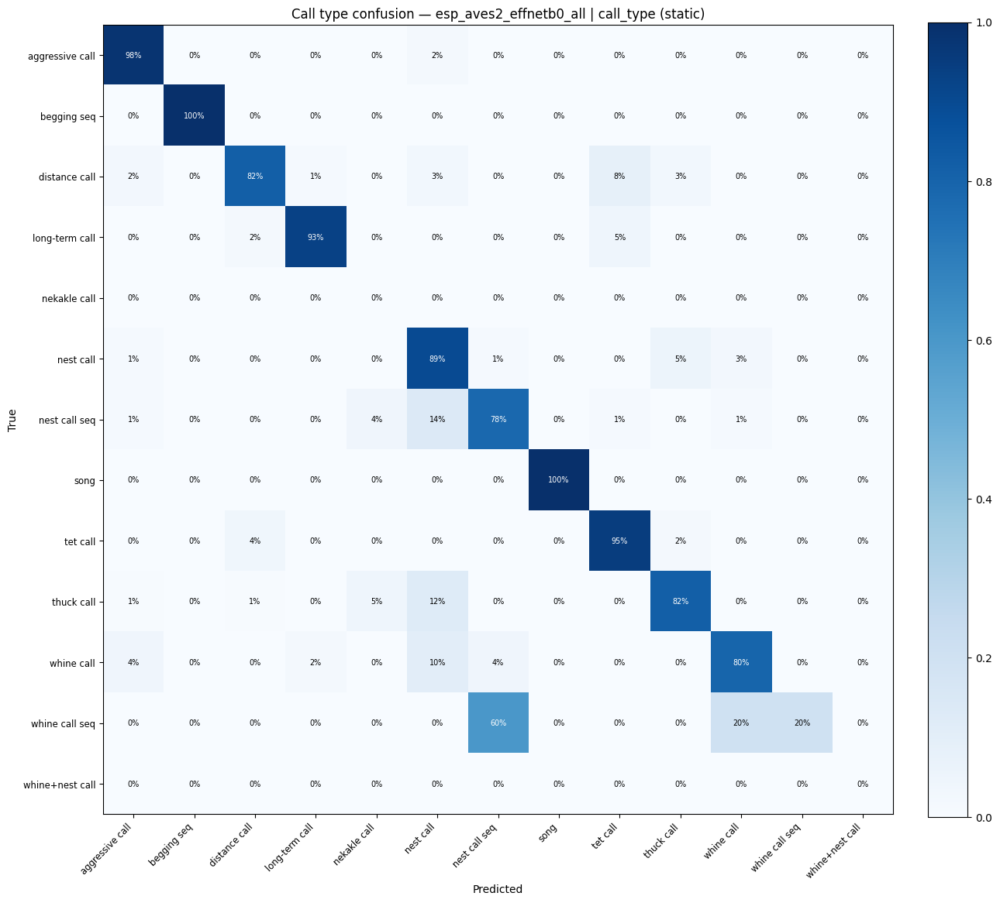

Zebra Finch Call-Type and Age Classification¶
Classify 11 call types and adult/juvenile age groups in zebra finch (Taeniopygia guttata) vocalizations using BEATs and EfficientNet-B0.
Workflow: download → explore → embed → UMAP → training-free metrics (NMI, ARI, R-AUC) → linear probe → attention probe (sl-BEATs) → static + interactive figures → save artifacts.
import pathlib
import sys
def find_repo_root(start: pathlib.Path) -> pathlib.Path:
for p in [start, *start.parents]:
if (p / "pyproject.toml").exists():
return p
raise FileNotFoundError("Could not locate repo root (pyproject.toml not found).")
REPO_ROOT = find_repo_root(pathlib.Path().resolve())
sys.path.insert(0, str(REPO_ROOT))
import json
import re
import zipfile
import librosa
import matplotlib.pyplot as plt
import numpy as np
import pandas as pd
import plotly.express as px
import soundfile as sf
import torch
from avex import load_model
from IPython.display import display
from tqdm.auto import tqdm
from utils.probing import (
compute_training_free_metrics,
run_attention_probe_fixed_split,
run_linear_probe_fixed_split,
)
from utils.visualization import (
confusion_heatmap_static,
plot_model_comparison,
plot_model_comparison_static,
plot_umap,
plot_umap_static,
)
EXAMPLE_DIR = REPO_ROOT / "examples" / "05_zebra_finch"
DATA_DIR = EXAMPLE_DIR / "data"
AUDIO_DIR = DATA_DIR / "audio"
EMBED_DIR = DATA_DIR / "embeddings"
EMBED_DIR.mkdir(parents=True, exist_ok=True)
TARGET_SR = 16_000
DEVICE = "cpu"
BEATS_MODEL = "esp_aves2_sl_beats_all"
EFFNET_MODEL = "esp_aves2_effnetb0_all"
# Full mode: run all cells (can take a while).
FAST_MODE = False
print("Setup complete.")
2026-04-21 10:42:15.695893: I tensorflow/core/platform/cpu_feature_guard.cc:210] This TensorFlow binary is optimized to use available CPU instructions in performance-critical operations.
To enable the following instructions: AVX2 FMA, in other operations, rebuild TensorFlow with the appropriate compiler flags.
2026-04-21 10:42:17.648254: I external/local_xla/xla/tsl/cuda/cudart_stub.cc:31] Could not find cuda drivers on your machine, GPU will not be used.
Setup complete.
1. Download Dataset¶
FIGSHARE_ARTICLE_ID = 11905533
FIGSHARE_API_URL = f"https://api.figshare.com/v2/articles/{FIGSHARE_ARTICLE_ID}/files"
ARCHIVE_PATH = DATA_DIR / "zebra_finch_calls.zip"
EXTRACT_SENTINEL = AUDIO_DIR / ".extracted"
import json as _json_mod
import urllib.request as _ur
def download_with_progress(url, dest):
def _hook(count, bs, total):
if total > 0:
print(f"\r {min(count * bs / total * 100, 100):.1f}%", end="", flush=True)
_ur.urlretrieve(url, dest, reporthook=_hook)
print()
AUDIO_DIR.mkdir(parents=True, exist_ok=True)
if not ARCHIVE_PATH.exists():
with _ur.urlopen(FIGSHARE_API_URL) as resp:
files_info = _json_mod.loads(resp.read())
target = max(files_info, key=lambda f: f["size"])
print(f"Downloading {target['name']} ({target['size'] / 1e6:.0f} MB) ...")
download_with_progress(target["download_url"], ARCHIVE_PATH)
else:
print(f"Archive present ({ARCHIVE_PATH.stat().st_size / 1e6:.1f} MB) — skipping.")
if not EXTRACT_SENTINEL.exists():
print("Extracting ...")
with zipfile.ZipFile(ARCHIVE_PATH) as zf:
zf.extractall(AUDIO_DIR)
EXTRACT_SENTINEL.touch()
print("Done.")
else:
print("Audio already extracted.")
print(f"WAV files: {len(list(AUDIO_DIR.glob('**/*.wav')))}")
Archive present (140.6 MB) — skipping.
Audio already extracted.
WAV files: 6402
2. Data Exploration¶
CALL_TYPE_NAMES = {
"aggc": "aggressive call",
"ag": "aggressive call",
"dc": "distance call",
"disc": "distance call",
"ltc": "long-term call",
"nekakle": "nekakle call",
"nekaklec": "nekakle call",
"nestc": "nest call",
"nest": "nest call",
"ne": "nest call",
"nearkc": "nest call",
"neseq": "nest call seq",
"nestseq": "nest call seq",
"nestcseq": "nest call seq",
"so": "song",
"song": "song",
"tetc": "tet call",
"tet": "tet call",
"te": "tet call",
"thuckc": "thuck call",
"thukc": "thuck call",
"thuc": "thuck call",
"tukc": "thuck call",
"whinec": "whine call",
"whine": "whine call",
"whi": "whine call",
"wh": "whine call",
"wc": "whine call",
"whic": "whine call",
"whinecseq": "whine call seq",
"whicnestc": "whine+nest call",
"beggseq": "begging seq",
}
META_PATH = DATA_DIR / "metadata.csv"
FNAME_RE = re.compile(r"^([A-Za-z][A-Za-z0-9]*)_\d*-([A-Za-z]+)-", re.IGNORECASE)
if META_PATH.exists():
# Load existing metadata (preserves same row ordering as any cached embeddings)
df = pd.read_csv(META_PATH)
if "call_name" not in df.columns and "call_type" in df.columns:
df["call_name"] = df["call_type"].map(lambda c: CALL_TYPE_NAMES.get(c, c))
if "age" not in df.columns:
df["age"] = "unknown"
print(f"Loaded existing metadata: {len(df)} rows")
else:
wav_files = sorted(AUDIO_DIR.glob("**/*.wav"))
records = []
for wav_path in wav_files:
m = FNAME_RE.search(wav_path.name)
if m is None:
continue
specimen = m.group(1)
call_code = m.group(2).lower()
info = sf.info(str(wav_path))
records.append(
{
"path": str(wav_path),
"filename": wav_path.name,
"specimen": specimen,
"call_type": call_code,
"call_name": CALL_TYPE_NAMES.get(call_code, call_code),
"age": "unknown",
"duration_s": info.duration,
"sample_rate": info.samplerate,
}
)
df = pd.DataFrame(records)
df.to_csv(META_PATH, index=False)
print(f"Parsed and saved: {len(df)} files")
print(f"Call types: {df['call_name'].nunique()}, specimens: {df['specimen'].nunique()}")
Loaded existing metadata: 3395 rows
Call types: 13, specimens: 49
ct_df = df.groupby("call_name").size().reset_index(name="count").sort_values("count", ascending=False)
fig = px.bar(
ct_df,
x="call_name",
y="count",
title="Zebra finch call type counts",
labels={"call_name": "Call type", "count": "Number of calls"},
color="count",
color_continuous_scale="Blues",
)
fig.update_layout(xaxis_tickangle=-30, showlegend=False)
display(fig)
3. Embedding Extraction¶
MIN_SAMPLES = int(0.5 * TARGET_SR)
def load_audio(path: str, target_sr: int = TARGET_SR) -> torch.Tensor:
"""Load a WAV, convert to mono, resample, zero-pad to at least 0.5 s."""
wav, sr = sf.read(path, dtype="float32", always_2d=True)
wav = wav.mean(axis=1)
if sr != target_sr:
wav = librosa.resample(wav, orig_sr=sr, target_sr=target_sr)
if len(wav) < MIN_SAMPLES:
wav = np.pad(wav, (0, MIN_SAMPLES - len(wav)))
return torch.from_numpy(wav).unsqueeze(0)
print(f"Sample shape: {load_audio(df['path'].iloc[0]).shape}")
Sample shape: torch.Size([1, 8000])
BEATS_CACHE = EMBED_DIR / "beats_embeddings.npy"
if BEATS_CACHE.exists() and np.load(BEATS_CACHE).shape[0] == len(df):
beats_embs = np.load(BEATS_CACHE)
print(f"Loaded cached BEATs last-layer embeddings: {beats_embs.shape}")
else:
print(f"Loading model: {BEATS_MODEL}")
model = load_model(BEATS_MODEL, return_features_only=True, device=DEVICE)
model.eval()
embeddings = []
with torch.no_grad():
for path in tqdm(df["path"], desc="BEATs last-layer"):
wav = load_audio(path)
feats = model(wav) # (1, T, 768)
embeddings.append(feats.mean(dim=1).squeeze(0).cpu().numpy())
beats_embs = np.stack(embeddings)
np.save(BEATS_CACHE, beats_embs)
print(f"Saved BEATs last-layer embeddings: {beats_embs.shape}")
del model
Loaded cached BEATs last-layer embeddings: (3395, 768)
BEATS_ALL_CACHE = EMBED_DIR / "beats_all_layers_embeddings.npy"
if BEATS_ALL_CACHE.exists() and np.load(BEATS_ALL_CACHE).shape[0] == len(df):
beats_all_embs = np.load(BEATS_ALL_CACHE)
print(f"Loaded cached BEATs all-layers embeddings: {beats_all_embs.shape}")
else:
print(f"Loading model for all-layers extraction: {BEATS_MODEL}")
model = load_model(BEATS_MODEL, return_features_only=True, device=DEVICE)
model.eval()
# Register forward hooks on every transformer encoder layer
try:
encoder_layers = model.model.encoder.layers
except AttributeError:
encoder_layers = model.backbone.encoder.layers
n_layers = len(encoder_layers)
layer_store: dict = {}
hooks = []
for i, layer in enumerate(encoder_layers):
def _make_hook(idx):
def _hook(module, inp, out):
layer_store[idx] = out[0] if isinstance(out, tuple) else out
return _hook
hooks.append(layer.register_forward_hook(_make_hook(i)))
print(f" Registered hooks on {n_layers} transformer layers.")
all_embs = []
with torch.no_grad():
for path in tqdm(df["path"], desc="BEATs all-layers"):
layer_store.clear()
wav = load_audio(path)
_ = model(wav)
# Mean-pool each layer then average across layers → (D,)
# Handles both time-first (T, B, D) and batch-first (B, T, D) outputs
per_layer = [
layer_store[i].view(-1, layer_store[i].shape[-1]).mean(dim=0).cpu().numpy() for i in range(n_layers)
]
all_embs.append(np.mean(per_layer, axis=0))
for h in hooks:
h.remove()
beats_all_embs = np.stack(all_embs)
np.save(BEATS_ALL_CACHE, beats_all_embs)
print(f"Saved BEATs all-layers embeddings: {beats_all_embs.shape}")
del model
Loaded cached BEATs all-layers embeddings: (3395, 768)
EFFNET_CACHE = EMBED_DIR / "effnet_embeddings.npy"
if EFFNET_CACHE.exists() and np.load(EFFNET_CACHE).shape[0] == len(df):
effnet_embs = np.load(EFFNET_CACHE)
print(f"Loaded cached EfficientNet embeddings: {effnet_embs.shape}")
else:
print(f"Loading model: {EFFNET_MODEL}")
model = load_model(EFFNET_MODEL, return_features_only=True, device=DEVICE)
model.eval()
embeddings = []
with torch.no_grad():
for path in tqdm(df["path"], desc="EfficientNet"):
wav = load_audio(path)
feats = model(wav) # (1, C, H, W)
embeddings.append(feats.mean(dim=(2, 3)).squeeze(0).cpu().numpy())
effnet_embs = np.stack(embeddings)
np.save(EFFNET_CACHE, effnet_embs)
print(f"Saved EfficientNet embeddings: {effnet_embs.shape}")
del model
Loaded cached EfficientNet embeddings: (3395, 1280)
4. UMAP Visualisation¶
call_labels = df["call_name"].tolist()
hover = [f"{row['filename']}<br>Type: {row['call_name']}" for _, row in df.iterrows()]
if FAST_MODE:
print("FAST_MODE: skipping UMAP visualisations (BEATs last layer).")
else:
fig_beats = plot_umap(
beats_embs,
labels=call_labels,
title=f"UMAP — {BEATS_MODEL} (last layer)<br><sup>colour = call type</sup>",
hover_text=hover,
)
display(fig_beats)
fig_umap_beats_static = plot_umap_static(
beats_embs,
labels=call_labels,
title=f"UMAP — {BEATS_MODEL} (last layer) — static",
)
display(fig_umap_beats_static)
/home/marius_miron_earthspecies_org/code/avex-examples/.venv/lib/python3.12/site-packages/umap/umap_.py:1952: UserWarning: n_jobs value 1 overridden to 1 by setting random_state. Use no seed for parallelism.
warn(
/home/marius_miron_earthspecies_org/code/avex-examples/.venv/lib/python3.12/site-packages/umap/umap_.py:1952: UserWarning: n_jobs value 1 overridden to 1 by setting random_state. Use no seed for parallelism.
warn(

if FAST_MODE:
print("FAST_MODE: skipping UMAP visualisations (BEATs all layers avg).")
else:
fig_beats_all = plot_umap(
beats_all_embs,
labels=call_labels,
title=f"UMAP — {BEATS_MODEL} (all layers avg)",
hover_text=hover,
)
display(fig_beats_all)
fig_umap_beats_all_static = plot_umap_static(
beats_all_embs,
labels=call_labels,
title=f"UMAP — {BEATS_MODEL} (all layers avg) — static",
)
display(fig_umap_beats_all_static)
/home/marius_miron_earthspecies_org/code/avex-examples/.venv/lib/python3.12/site-packages/umap/umap_.py:1952: UserWarning: n_jobs value 1 overridden to 1 by setting random_state. Use no seed for parallelism.
warn(
/home/marius_miron_earthspecies_org/code/avex-examples/.venv/lib/python3.12/site-packages/umap/umap_.py:1952: UserWarning: n_jobs value 1 overridden to 1 by setting random_state. Use no seed for parallelism.
warn(

if FAST_MODE:
print("FAST_MODE: skipping UMAP visualisations (EfficientNet).")
else:
fig_effnet = plot_umap(
effnet_embs,
labels=call_labels,
title=f"UMAP — {EFFNET_MODEL}",
hover_text=hover,
)
display(fig_effnet)
fig_umap_effnet_static = plot_umap_static(
effnet_embs,
labels=call_labels,
title=f"UMAP — {EFFNET_MODEL} — static",
)
display(fig_umap_effnet_static)
/home/marius_miron_earthspecies_org/code/avex-examples/.venv/lib/python3.12/site-packages/umap/umap_.py:1952: UserWarning: n_jobs value 1 overridden to 1 by setting random_state. Use no seed for parallelism.
warn(
/home/marius_miron_earthspecies_org/code/avex-examples/.venv/lib/python3.12/site-packages/umap/umap_.py:1952: UserWarning: n_jobs value 1 overridden to 1 by setting random_state. Use no seed for parallelism.
warn(

5. Training-Free Metrics¶
print("Computing training-free metrics (NMI, ARI, R-AUC) ...")
print("These evaluate embedding quality without fitting any classifier.\n")
_labels_for_metrics = call_labels
_metric_models = [
(f"{BEATS_MODEL} (last layer)", beats_embs),
(f"{BEATS_MODEL} (all layers avg)", beats_all_embs),
(EFFNET_MODEL, effnet_embs),
]
_metric_rows = []
for _name, _embs in _metric_models:
_m = compute_training_free_metrics(_embs, _labels_for_metrics)
_metric_rows.append(
{"Model": _name, "NMI": round(_m["nmi"], 3), "ARI": round(_m["ari"], 3), "R-AUC": round(_m["r_auc"], 3)}
)
print(f" {_name}: NMI={_m['nmi']:.3f} ARI={_m['ari']:.3f} R-AUC={_m['r_auc']:.3f}")
_metrics_df = pd.DataFrame(_metric_rows).set_index("Model")
display(_metrics_df)
Computing training-free metrics (NMI, ARI, R-AUC) ...
These evaluate embedding quality without fitting any classifier.
esp_aves2_sl_beats_all (last layer): NMI=0.613 ARI=0.464 R-AUC=0.558
esp_aves2_sl_beats_all (all layers avg): NMI=0.596 ARI=0.436 R-AUC=0.553
esp_aves2_effnetb0_all: NMI=0.475 ARI=0.309 R-AUC=0.458
| NMI | ARI | R-AUC | |
|---|---|---|---|
| Model | |||
| esp_aves2_sl_beats_all (last layer) | 0.613 | 0.464 | 0.558 |
| esp_aves2_sl_beats_all (all layers avg) | 0.596 | 0.436 | 0.553 |
| esp_aves2_effnetb0_all | 0.475 | 0.309 | 0.458 |
6. Linear Probe¶
Two tasks: 11-class call type and 2-class age group.
from sklearn.model_selection import GroupShuffleSplit
probe_kwargs = dict(random_state=42, max_iter=1000)
def _probe_acc_or_nan(res: dict) -> float:
acc = res.get("accuracy")
if acc is None:
return float("nan")
try:
return float(acc)
except (TypeError, ValueError):
return float("nan")
def _probe_acc_str(res: dict) -> str:
acc = res.get("accuracy")
if acc is None:
return "NA"
try:
v = float(acc)
except (TypeError, ValueError):
return "NA"
if np.isnan(v):
return "NA"
return f"{v:.3f}"
def _label_values(labels: list | np.ndarray, idx: np.ndarray) -> set[str]:
vals: set[str] = set()
for x in np.asarray(labels, dtype=object)[idx]:
if x is None:
continue
if isinstance(x, float) and np.isnan(x):
continue
s = str(x).strip()
if not s:
continue
vals.add(s)
return vals
def _get_age_group_labels(_df: pd.DataFrame) -> list[str] | None:
if "age_group" in _df.columns:
vals = _df["age_group"].astype(str).tolist()
uniq = sorted({v for v in vals if v and v.lower() not in {"nan", "none"}})
if len(uniq) >= 2:
return vals
if "age" in _df.columns:
vals = _df["age"].astype(str).tolist()
uniq = sorted({v for v in vals if v and v.lower() not in {"nan", "none", "unknown"}})
if len(uniq) >= 2:
return vals
return None
age_labels = _get_age_group_labels(df)
tasks_all: list[tuple[str, list[str]]] = [("call_type", call_labels)]
if age_labels is not None:
tasks_all.append(("age_group", age_labels))
specimen_groups = np.array(df["specimen"].tolist())
def _split_valid(train_idx: np.ndarray, test_idx: np.ndarray) -> bool:
for _task, _labs in tasks_all:
tr = _label_values(_labs, train_idx)
te = _label_values(_labs, test_idx)
if len(tr) < 2 or len(te) < 2:
return False
return True
TRAIN_IDX = None
TEST_IDX = None
split_seed = None
for _seed in range(0, 500):
_gss = GroupShuffleSplit(n_splits=1, test_size=0.2, random_state=_seed)
_tr, _te = next(_gss.split(np.zeros(len(df)), call_labels, groups=specimen_groups))
if _split_valid(_tr, _te):
TRAIN_IDX, TEST_IDX, split_seed = _tr, _te, _seed
break
if TRAIN_IDX is None or TEST_IDX is None:
print(
"WARNING: Could not find a specimen-grouped split where all tasks have ≥2 classes in both train and test. "
"Falling back to call_type-only probing."
)
tasks: list[tuple[str, list[str]]] = [("call_type", call_labels)]
_gss = GroupShuffleSplit(n_splits=1, test_size=0.2, random_state=probe_kwargs["random_state"])
TRAIN_IDX, TEST_IDX = next(_gss.split(np.zeros(len(df)), call_labels, groups=specimen_groups))
split_seed = probe_kwargs["random_state"]
else:
tasks = tasks_all
print(
f"Split seed: {split_seed} | Train specimens: {len(set(specimen_groups[TRAIN_IDX]))} | Test specimens: {len(set(specimen_groups[TEST_IDX]))}"
)
RUN_CALL_TYPE_PROBE = any(t == "call_type" for t, _ in tasks)
RUN_AGE_GROUP_PROBE = any(t == "age_group" for t, _ in tasks)
for _task, _labs in tasks:
tr = _label_values(_labs, TRAIN_IDX)
te = _label_values(_labs, TEST_IDX)
print(f" {_task}: train_classes={len(tr)} test_classes={len(te)}")
probe_results: dict[str, dict] = {}
for emb_name, embs in [
(f"{BEATS_MODEL} (last layer)", beats_embs),
(f"{BEATS_MODEL} (all layers avg)", beats_all_embs),
(EFFNET_MODEL, effnet_embs),
]:
for task, task_labels in tasks:
key = f"{emb_name} | {task}"
res = run_linear_probe_fixed_split(
embs,
task_labels,
train_idx=TRAIN_IDX,
test_idx=TEST_IDX,
random_state=probe_kwargs["random_state"],
max_iter=probe_kwargs["max_iter"],
)
probe_results[key] = res
print(f"{key}: accuracy = {_probe_acc_str(res)}")
Split seed: 0 | Train specimens: 39 | Test specimens: 10
call_type: train_classes=13 test_classes=11
age_group: train_classes=2 test_classes=2
esp_aves2_sl_beats_all (last layer) | call_type: accuracy = 0.796
esp_aves2_sl_beats_all (last layer) | age_group: accuracy = 0.757
esp_aves2_sl_beats_all (all layers avg) | call_type: accuracy = 0.824
esp_aves2_sl_beats_all (all layers avg) | age_group: accuracy = 0.839
esp_aves2_effnetb0_all | call_type: accuracy = 0.833
esp_aves2_effnetb0_all | age_group: accuracy = 0.985
def _probe_acc_or_nan(res: dict) -> float:
acc = res.get("accuracy")
if acc is None:
return float("nan")
try:
return float(acc)
except (TypeError, ValueError):
return float("nan")
rows = [
{"Model": k.split(" | ")[0], "Task": k.split(" | ")[1], "Accuracy": round(_probe_acc_or_nan(v), 4)}
for k, v in probe_results.items()
]
acc_df = pd.DataFrame(rows)
display(acc_df.pivot(index="Model", columns="Task", values="Accuracy").style.format("{:.4f}"))
fig_cmp = plot_model_comparison(
{k: _probe_acc_or_nan(v) for k, v in probe_results.items()},
title="Zebra Finch — call type & age classification accuracy",
)
display(fig_cmp) # avoid interactive show() in non-interactive runs
display(
plot_model_comparison_static(
{k: _probe_acc_or_nan(v) for k, v in probe_results.items()},
title="Zebra Finch — linear probe (static)",
)
)
| Task | age_group | call_type |
|---|---|---|
| Model | ||
| esp_aves2_effnetb0_all | 0.9851 | 0.8334 |
| esp_aves2_sl_beats_all (all layers avg) | 0.8390 | 0.8236 |
| esp_aves2_sl_beats_all (last layer) | 0.7572 | 0.7963 |

7. Attention Probe (sl-BEATs)¶
Attention probe on mean-pooled BEATs embeddings for call type and age tasks.
attn_probe_kwargs = dict(num_heads=8, num_attn_layers=2, epochs=50, random_state=42, device=DEVICE)
attention_results: dict[str, dict] = {}
fig_attn_call = None
fig_attn_age = None
if not RUN_CALL_TYPE_PROBE and not RUN_AGE_GROUP_PROBE:
print("Skipping attention probe (no valid tasks on this split).")
else:
print("Running attention probe (this can be slow) ...")
if RUN_CALL_TYPE_PROBE:
key = f"{BEATS_MODEL} (attn) | call_type"
res = run_attention_probe_fixed_split(
beats_embs,
call_labels,
train_idx=TRAIN_IDX,
test_idx=TEST_IDX,
**attn_probe_kwargs,
)
attention_results[key] = res
print(f" {key}: accuracy = {_probe_acc_str(res)}")
fig_attn_call = plot_model_comparison(
{key: _probe_acc_or_nan(res)},
title="Zebra Finch — BEATs attention probe (call type)",
)
display(fig_attn_call)
display(
plot_model_comparison_static(
{key: _probe_acc_or_nan(res)},
title="Zebra Finch — BEATs attention probe (call type) — static",
)
)
if RUN_AGE_GROUP_PROBE:
key = f"{BEATS_MODEL} (attn) | age_group"
res = run_attention_probe_fixed_split(
beats_embs,
age_labels,
train_idx=TRAIN_IDX,
test_idx=TEST_IDX,
**attn_probe_kwargs,
)
attention_results[key] = res
print(f" {key}: accuracy = {_probe_acc_str(res)}")
fig_attn_age = plot_model_comparison(
{key: _probe_acc_or_nan(res)},
title="Zebra Finch — BEATs attention probe (age)",
)
display(fig_attn_age)
display(
plot_model_comparison_static(
{key: _probe_acc_or_nan(res)},
title="Zebra Finch — BEATs attention probe (age) — static",
)
)
Running attention probe (this can be slow) ...
esp_aves2_sl_beats_all (attn) | call_type: accuracy = 0.793

esp_aves2_sl_beats_all (attn) | age_group: accuracy = 0.942

def plot_confusion_matrix(cm, classes, title):
cm_norm = cm.astype(float) / cm.sum(axis=1, keepdims=True)
return px.imshow(
cm_norm,
x=classes,
y=classes,
color_continuous_scale="Blues",
zmin=0,
zmax=1,
text_auto=".2f",
title=title,
labels={"x": "Predicted", "y": "True", "color": "Recall"},
aspect="auto",
)
for key in [k for k in probe_results if "call_type" in k]:
res = probe_results[key]
display(plot_confusion_matrix(res["confusion_matrix"], res["classes"], title=f"Call type confusion — {key}"))
display(
confusion_heatmap_static(
res["confusion_matrix"],
res["classes"],
title=f"Call type confusion — {key} (static)",
)
)
/tmp/ipykernel_1192382/1326845768.py:2: RuntimeWarning: invalid value encountered in divide
cm_norm = cm.astype(float) / cm.sum(axis=1, keepdims=True)
/home/marius_miron_earthspecies_org/code/avex-examples/utils/visualization.py:562: RuntimeWarning: invalid value encountered in divide
cm_norm = np.where(row_sums > 0, cm.astype(float) / row_sums, 0.0)

/tmp/ipykernel_1192382/1326845768.py:2: RuntimeWarning: invalid value encountered in divide
cm_norm = cm.astype(float) / cm.sum(axis=1, keepdims=True)
/home/marius_miron_earthspecies_org/code/avex-examples/utils/visualization.py:562: RuntimeWarning: invalid value encountered in divide
cm_norm = np.where(row_sums > 0, cm.astype(float) / row_sums, 0.0)

/tmp/ipykernel_1192382/1326845768.py:2: RuntimeWarning: invalid value encountered in divide
cm_norm = cm.astype(float) / cm.sum(axis=1, keepdims=True)
/home/marius_miron_earthspecies_org/code/avex-examples/utils/visualization.py:562: RuntimeWarning: invalid value encountered in divide
cm_norm = np.where(row_sums > 0, cm.astype(float) / row_sums, 0.0)

9. Save Artifacts¶
ARTIFACTS_DIR = EXAMPLE_DIR / "artifacts"
ARTIFACTS_DIR.mkdir(parents=True, exist_ok=True)
# Some figures are skipped in fast runs.
for _fig, _name in [
(locals().get("fig_beats"), "umap_beats.html"),
(locals().get("fig_beats_all"), "umap_beats_all_layers.html"),
(locals().get("fig_effnet"), "umap_effnet.html"),
(locals().get("fig_cmp"), "model_comparison.html"),
(locals().get("fig_attn_call"), "model_comparison_beats_attn_call_type.html"),
(locals().get("fig_attn_age"), "model_comparison_beats_attn_age.html"),
]:
if _fig is not None:
_fig.write_html(str(ARTIFACTS_DIR / _name))
for _fig, _name in [
(locals().get("fig_umap_beats_static"), "umap_beats_static.png"),
(locals().get("fig_umap_beats_all_static"), "umap_beats_all_layers_static.png"),
(locals().get("fig_umap_effnet_static"), "umap_effnet_static.png"),
]:
if _fig is not None:
_fig.savefig(str(ARTIFACTS_DIR / _name), dpi=150, bbox_inches="tight")
plt.close("all")
_metrics_out = {
"n_calls": len(df),
"n_call_types": df["call_name"].nunique(),
"training_free": {
k: compute_training_free_metrics(v, call_labels)
for k, v in [
("beats_last", beats_embs),
("beats_all_layers", beats_all_embs),
("effnet", effnet_embs),
]
},
"linear_probe_accuracy": {k: round(_probe_acc_or_nan(v), 4) for k, v in probe_results.items()},
"attention_probe_accuracy": {k: round(_probe_acc_or_nan(v), 4) for k, v in attention_results.items()},
}
with open(ARTIFACTS_DIR / "zebra_finch_metrics.json", "w") as _f:
json.dump(_metrics_out, _f, indent=2)
print(f"Artifacts saved to {ARTIFACTS_DIR}")
Artifacts saved to /home/marius_miron_earthspecies_org/code/avex-examples/examples/05_zebra_finch/artifacts